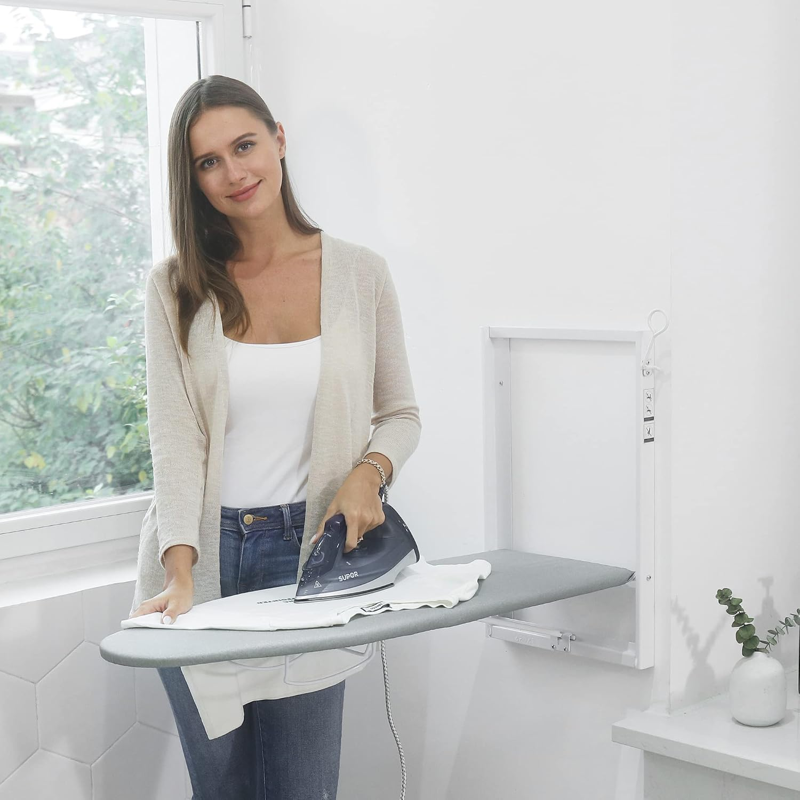
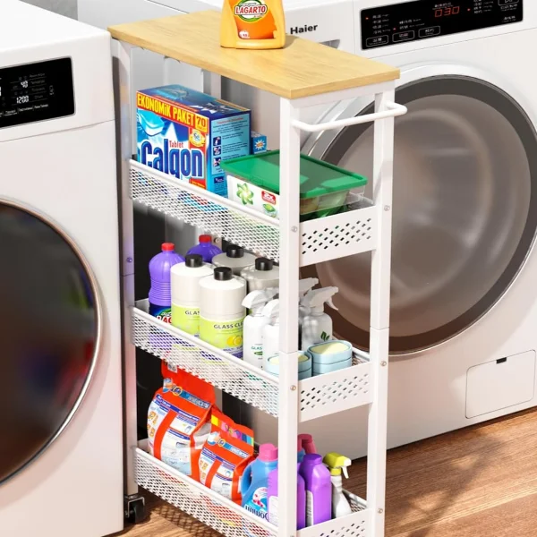
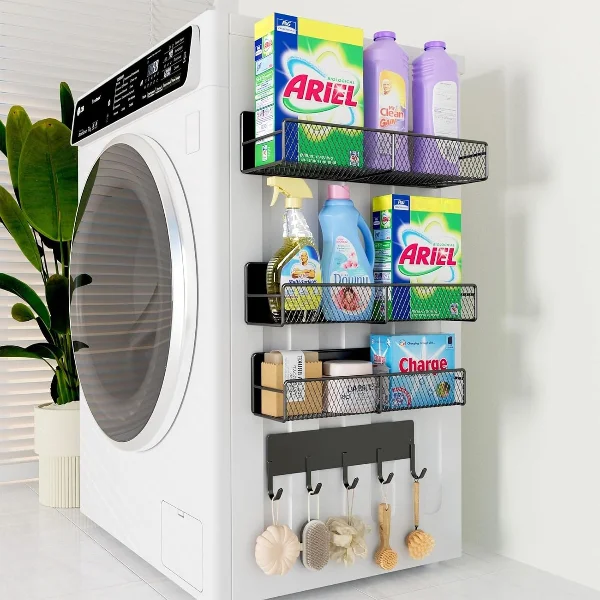

When you have a tiny laundry room—or perhaps just a laundry closet in a hallway—floor space is practically nonexistent. If you try to store hampers, drying racks, and cleaning supplies on the floor, you'll barely have enough room to open the washer door.
The only direction to go is up. Maximizing vertical storage and uncovering hidden "dead zones" is the ultimate key to a highly functional, small laundry space. Here is your complete guide to utilizing vertical storage and hidden spots.
1. Utilize the Back of the Door
The back of the laundry room door is one of the most underutilized storage spots in the house. By installing a heavy-duty over-the-door organizer, you gain floor-to-ceiling storage. Use this space for tall, narrow items like ironing boards, brooms, mops, or wire baskets filled with stain removers, lint rollers, and spray bottles.

Wall Mounted Ironing Board Holder
Problem: Ironing boards take up massive amounts of floor space when leaned against the wall.
Solution: This over-the-door or wall-mounted rack securely holds both your ironing board and iron on the back of the door.
- Gets the bulky ironing board completely off the floor
- Heat-resistant basket safely stores a hot iron
- Takes advantage of unused door space
2. Exploit the Gap Between Machines
Look between your washer and dryer, or between the machines and the wall. Is there a 5-to-8-inch gap? This is a hidden goldmine. A super-slim rolling storage cart is specifically designed to slide perfectly into these narrow gaps. You can store three tiers of detergents, dryer sheets, and fabric softeners completely out of sight.

Slim Rolling Laundry Cart
Problem: Small laundry rooms have zero cabinetry, leaving detergent bottles stranded on the floor.
Solution: A rolling storage cart slides directly into the 5-inch gap between your washer and dryer.
- Transforms wasted gaps into functional shelving
- Keeps unsightly cleaning bottles hidden away
- Rolls out easily to access whatever you need
3. Go High with Floating Shelves
If you don't have built-in cabinets, install heavy-duty floating shelves directly above your machines, taking them as high as the ceiling allows.
- Lower shelf (Easy reach): Daily essentials like liquid detergent in pump bottles and dryer balls.
- Middle shelf: Weekly items like bleach, stain removers, and mesh laundry bags.
- Top shelf (Requires a step stool): Overstock items, extra paper towels, and seasonal cleaning supplies stored in aesthetic woven bins.
4. Wall-Mount Everything
Anything that sits on the floor can likely be mounted to the wall. Stop using bulky floor-standing drying racks; instead, install an accordion-style drying rack that pulls out from the wall and pushes flat when not in use. Mount your iron holder. Mount your broom holder. Keeping the floor clear instantly makes the room feel twice as large.
5. The Magnetic Side of the Machine
The exposed metal side of your washing machine or dryer is essentially a blank canvas. Use strong magnetic shelves, magnetic lint bins, and magnetic hooks to store small, frequently used items directly on the side of the appliance without drilling a single hole.

Magnetic Washer & Dryer Shelf
Problem: Items stored on top of the washer inevitably vibrate and fall behind the machine.
Solution: This magnetic silicone shelf grips securely to the top of your machines, creating a safe, flat surface with a lip.
- Strong magnets keep it firmly in place during spin cycles
- Prevents items from falling behind the machines
- Perfect for small laundry closets with zero counter space
By shifting your focus from the floor to the walls, doors, and hidden gaps, you can store an incredible amount of supplies in a tiny laundry room without sacrificing maneuverability or aesthetics.